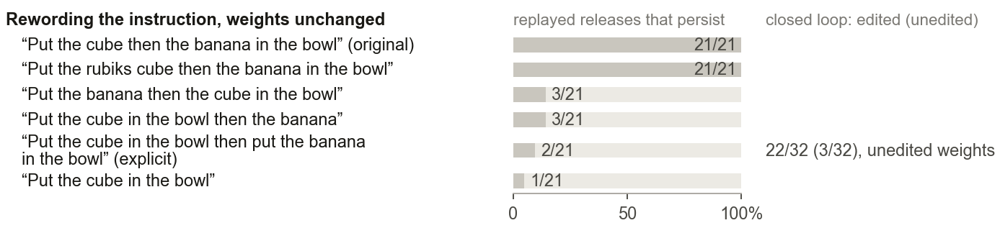

Distilling Instructions into Weights: Closed‑Form Edits Fix a Robot Policy’s Misreading
weightsmith: helping robots through misunderstandings
Told to “put the cube then the banana in the bowl,” π0.5 drops the cube: it binds “in the bowl” to the banana. With weight-space programming, we distil an explicit rewording directly into its weights: a closed-form weight edit, with no gradient descent and the instruction unchanged. Success on 128 unseen starts rises from 21% to 83%.
The robot misread one phrase
It knew how to do the task. It got confused about which object “in the bowl” referred to.
If a policy understands the goal, the wording shouldn’t matter. In Same Goal, Different Words, we found that it does. Across 864 rollouts of three world-action models, describing the same placement from the reference object’s side, rather than the object being moved, cut stable placements by 12.2 points. That work measured the wording gap. This one asks whether it can be closed inside the policy, in weight space.
π0.5 is an open, generalist vision-language-action policy with about 3 billion parameters; here it runs in simulation. Told to “put the cube then the banana in the bowl,” it picks up the cube, then lets go of it on the way. It succeeds only about one time in five.

To find out why, we replayed the exact moments it let go and changed only the wording. Renaming the cube changed nothing. Moving “in the bowl” right next to the cube made almost every drop disappear. The robot was attaching “in the bowl” to the banana, so while it held the cube it acted as if it held the wrong object.
The skill itself was fine. Given a clearer instruction, “put the cube in the bowl then put the banana in the bowl,” the same policy succeeds 22 times out of 32 instead of 3. Same goal, different words, and a sevenfold difference in success.
We programmed the fix into the weights
Instead of changing the words, we edited how the policy reads them, directly in weight space.
Rewording is not always possible: instructions come from people, or from other software. So we read the network’s activations under both wordings at the moments the robot let go, and wrote a weight edit that makes the original instruction produce the clear one’s internal state.
This is weight-space programming (Takehi et al.): an LLM editor, here Claude Opus, reads and writes the weights directly rather than through an optimizer. Our edit, closed-form instruction distillation, is one regularized least-squares solve per layer, the multi-key update used to edit facts stored in language models. There is no gradient descent and no training data; the math is in the paper. It took four attempts. The one that worked copies the clear wording’s effect at the image tokens, where the policy reads the instruction into what it sees.
It works in situations it has never seen. We tested it on 128 new starting positions that were never used while building it. The edited robot succeeded 106 times, against 27 for the original: 81 runs fixed and only 2 broken.
It isn’t luck, and it isn’t the size of the change. An edit of exactly the same size, pointing in random directions, did nothing: 9 successes in 64, like the original robot. Our edit gets most of what the clear wording itself achieves (50 versus 57 in 64) without changing a single word. A much more compact version, storable in 0.16% of the network’s size, keeps most of the effect.
It even helped tasks it wasn’t built for
Built for one task, the same edit lifted two others.
We ran the edit, unchanged, on 15 other tasks. Two improved a lot, and none got measurably worse. It is not a general “understand space better” switch, though: putting the cube to the right of the bowl still never works. Our guess† is that it strengthens how the robot ties a destination, like “in the bowl” or “to the left of”, to the object it is carrying.
What didn’t work
Weight edits re-route what a policy already computes. They don’t create a skill it lacks.
We applied weight-space programming to other failures, with Claude Opus and GPT-6 Astra as the LLM editors: a robot that grabs a lookalike block, a box too wide for its usual grip, and a mustard bottle that slips out of its fingers. Dozens of native weight edits, and none helped. Each of these failures lacked what the cube fix had: some version of the input under which the robot already does the right thing. The robot can tell the lookalike blocks apart, but nothing we tried made it act on that. The box needs a grasp it never learned, and the bottle simply slips.
![One bar per experiment, splitting its starting positions into broke, both succeed, both fail and fixed. On starts it never saw, our edit fixed 81 and broke 2 of 128, the compact version 86 and 3, and the AI editor’s own edit 22 and 6 of 64. A random edit of the same size fixed 6 and broke 10; the clearer wording with no edit fixed 45 and broke 1. On other tasks the same edit fixed 31 and broke 9 (eyeglasses) and 33 and 5 (cube left of the bowl). An edit for the lookalike block fixed 9 and broke 16, one gripper weight across 7 tasks 37 and 37, and simply running the same robot twice flipped 17 one way and 20 the other.](assets/fig/outcomes-simple.svg)
Then we let LLM editors try on their own
Seven LLM editors worked blind. One weight edit survived, and it fixed the misreading again.
We gave seven fresh Claude Opus editors the same weight-space programming tools and the same small budget. Each got one task, and each task showed a different kind of failure. They couldn’t see each other’s work, and we scored each submitted weight edit on 64 starting positions none of them had seen.
The editor given the cube task found the misreading on its own, with the same trick of replaying the drops under a clearer wording. It then wrote a different, far sparser weight edit, changing just 1,024 weights, which raised success from 11 to 27 in 64. That is less than our edit achieves, but it is the first weight edit by an autonomous LLM editor to pass this test.
| Task | Weight edit | Successes, before → after |
|---|---|---|
| Cube, then banana | 1,024 weights | 11 → 27, passed |
| Pick up eyeglasses | 3,072 weights | 18 → 27, within noise |
| Mustard into the left bin | 4,094 weights | 8 → 11, within noise |
The other four editors submitted no edit, as the protocol asks when nothing holds up. On cube left of the bowl the fix broke grasping; on stacking three cubes the edit failed its offline check; on the lookalike block no wording helped, so there was nothing to distil; and on the flat box the grasp held but the box still slipped. Every editor’s notes and code are in the repository.
Measuring carefully
Run the same robot twice on the same starts, and about a third of the outcomes change.
Simulated physics is not perfectly repeatable. The unchanged robot scored 14 of 16, then 8 of 16, on the very same starting positions. Small “improvements” are easy to fool yourself with. So we always compare the edited and the original robot on identical starts, confirm every result on starts never used while building the edit, and trust only differences that are bigger than this noise.
What this means
Edit when the robot can already do the right thing under some input. Train when it can’t.
The fix worked because three things were true. The robot had the skill. The failure came from one specific misreading. And some version of the input made it work. Every failure we couldn’t fix was missing one of these. Others who report big gains from weight edits worked with robots already trained on their task‡, which fits the same rule.
There are limits. The edit is low-rank but not sparse: it nudges many weights slightly. Finding it took a known-good instruction. We couldn’t predict in advance which other tasks it would help. And everything here is one robot model, in simulation.
Try it
Everything is open: the code, the benchmark, the edits and every result.
weightsmith is a harness for weight-space programming on robot policies. An LLM editor, or you, reads, probes and writes π0.5’s weights through one tool, and every weight edit is scored against the unedited policy on starts it never saw. Start with the README. The rules for submitting an edit are in the benchmark, every result so far is on the leaderboard, and every comparison in this article is in the explorer.
git clone https://github.com/adeeb10abbas/weightsmith && cd weightsmith
pip install -e '.[mcp]'
weightsmith --helpCite
@misc{abbas2026distilling,
title = {Distilling Instructions into Weights: Closed-Form Edits
Fix a Robot Policy's Misreading},
author = {Abbas, Ali-Adeeb and Seraj, Esmaeil},
year = {2026},
howpublished = {\url{https://ali-adeeb.com/weightsmith/}},
note = {arXiv preprint, forthcoming}
}† marks our hypotheses and ‡ results others reported that we did not reproduce. Everything else we measured ourselves, on paired simulator runs. The exact numbers and statistical tests are in the paper and the result files.
Each video shows one starting position where only the edited robot succeeds, at twice real speed. This work builds on weight-space programming (Takehi et al.) and uses Physical Intelligence’s open π0.5 model and NVIDIA’s RoboLab tasks in Isaac Sim. A companion study used GPT-6 Astra as the editor.